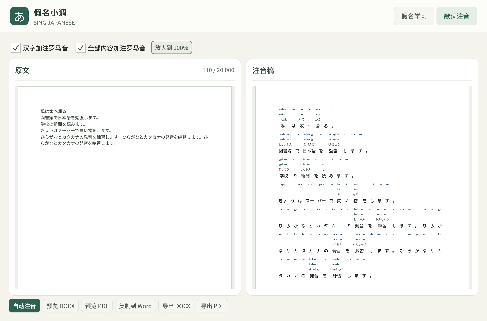

假名，一眼看全
71 个假名按窗口自动分栏，切换平假名、片假名与罗马音，点击即可听真人发音。
Linux 桌面应用 · 无账号 · 离线处理
一屏学习日语假名，为歌词和日语文本添加假名、罗马音，把清晰对齐的注音稿带到纸上。
目前提供 Ubuntu / Debian x86_64 安装包。此网站是介绍页，不会上传或处理你的文本。
71 个假名按窗口自动分栏，切换平假名、片假名与罗马音，点击即可听真人发音。
MeCab / IPADIC 本地词典分析，假名与原文居中对齐；两种罗马音层独立叠加，注音单元之间留白。
A4 分页预览，支持 PDF、DOCX、复制到 Word；缩放显示不改变文档的换行和分页。
以下为 Linux 下真实 Qt 桌面界面，示例文本用于演示学习和排版。

.deb 安装包。sudo apt install ./sing-japanese-0.3.0-Linux.deb
sing-japanese给文本注音后，勾选需要的罗马音层，再预览或导出。快捷键：Ctrl + Enter 注音，Ctrl + S 导出 PDF。